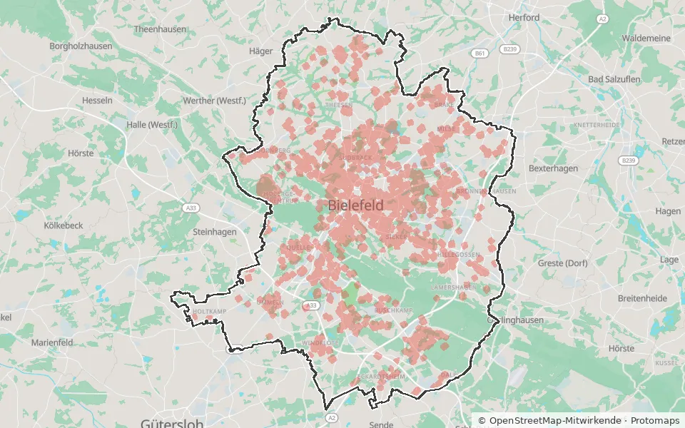
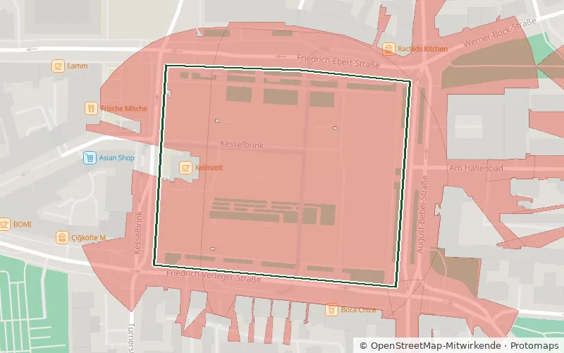
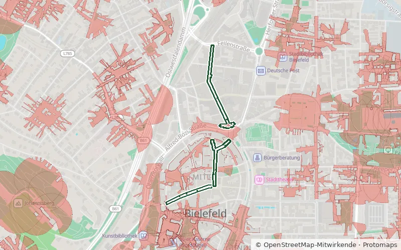
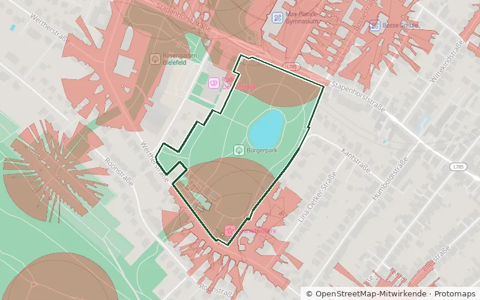
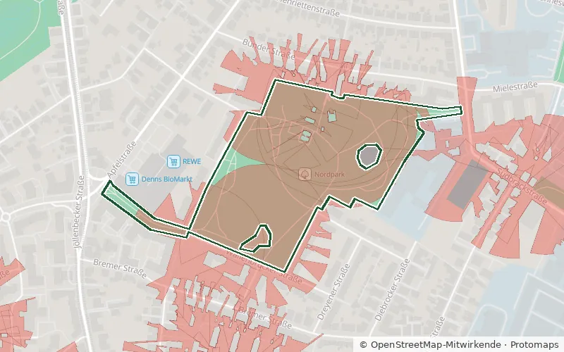
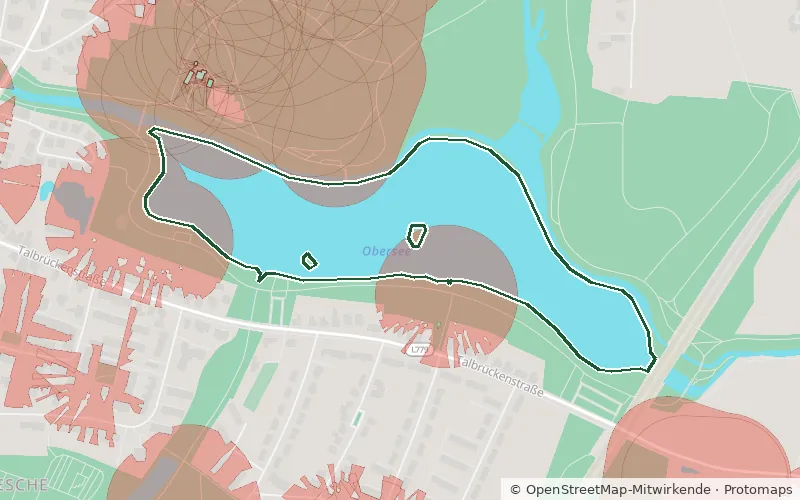
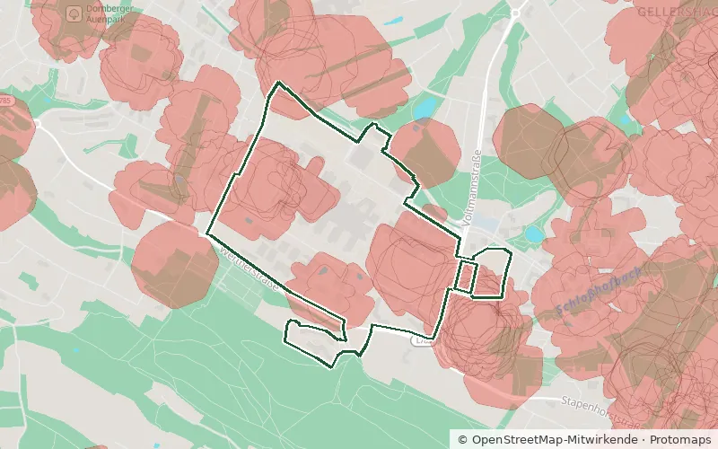

In Bielefeld ist öffentliches Kiffen auf 34 km² verboten, das sind 13,0 % der Stadtfläche von 259 km². Grund sind 1 742 Einrichtungen, in deren Sichtweite nach § 5 KCanG nicht konsumiert werden darf, vor allem Sportstätten und Spielplätze. Sichtweite heißt: höchstens 100 Meter vom Eingangsbereich, und nur dort, wo kein Gebäude die Sicht verdeckt. Dazu kommen die Fußgängerzonen, in denen zwischen 7 und 20 Uhr nicht konsumiert werden darf, und überall die unmittelbare Gegenwart von Kindern und Jugendlichen.
Ein Viertel der Stadt ist Wald, vor allem im Teutoburger Wald (24 % der Stadtfläche), und dort liegen nur 7,9 % in einer Zone. Ohne den Wald gerechnet sind es 14,6 %.

Woher die Zonen kommen
| Einrichtung | Anzahl | Zonenfläche |
|---|---|---|
| Schulen | 145 | 7,3 km² |
| Kitas und Kindergärten | 228 | 6,0 km² |
| Kindertagespflege | 13 | 0,3 km² |
| Spielplätze | 524 | 13,2 km² |
| Kinder- und Jugendeinrichtungen | 33 | 0,7 km² |
| Sportstätten | 799 | 16,7 km² |
Die Spalte rechts zählt jede Art für sich; weil sich Zonen verschiedener Einrichtungen überlappen, ist ihre Summe größer als die 34 km² oben. Den größten Teil machen die 799 Sportstätten aus, von Bolzplätzen über Turnhallen bis zu Fitnessstudios, gefolgt von 524 Spielplätzen.
Auf den beschilderten Spielplätzen verbietet die ordnungsbehördliche Verordnung der Stadt außerdem Alkohol; zu Cannabis sagt sie nichts (Verordnung). Anbauvereinigungen fehlen in der Tabelle: Wo sie anbauen, ist nicht veröffentlicht.
Kesselbrink und Innenstadt
Der Kesselbrink liegt fast ganz in einer Zone (98 %): Auf dem Platz liegen ein Spielplatz und der Bike- und Skatepark. Bei einer Kontrolle im Juni 2024 stellte die Polizei dort Kiffen in der Nähe des Spielplatzes fest (Polizei Bielefeld).

Die Fußgängerstraßen führt die Stadt in ihrem Straßenreinigungsverzeichnis als eigene Klasse, darunter Bahnhofstraße, Obernstraße, Niedernstraße, Alter Markt und Boulevard und in Brackwede Hauptstraße und Treppenstraße; Jahnplatz und Kesselbrink gehören nicht dazu (Straßenreinigungsverzeichnis). Das ist eine Einteilung für die Gebühren, kein Verkehrsrecht, kommt einer Liste aber am nächsten. Dort gilt zwischen 7 und 20 Uhr Konsumverbot; blau zeigt die Karte die Fußgängerbereiche, wie sie in OpenStreetMap eingetragen sind.
Von Bahnhofstraße, Obernstraße und Niedernstraße liegen außerdem 32 % in einer Sichtweiten-Zone, vom Alten Markt 9 %. Der Jahnplatz liegt zu 57 % in einer Zone, der Siegfriedplatz fast ganz (95 %).

Parks
Im Bürgerpark liegen 50 % der Fläche in einer Zone, um zwei Spielplätze, im Nordpark 93 %: Dort liegen zwei Kitas und zwei Sportanlagen. Der Ravensberger Park kommt auf 53 %, der Obersee auf 29 % der Wasserfläche.



Universität und Stadion
Hochschulen sind nach § 5 KCanG keine Verbotsorte. Vom Campus der Universität liegen 37 % in einer Zone: Auf dem Gelände liegen Schulen, Kitas und zehn Sportanlagen. Eine Hausordnung mit einer Regel zu Cannabis haben wir für die Universität nicht gefunden. Die Stadionordnung der Arminia an der Alm verbietet „Drogen“, ohne Cannabis zu nennen; das Stadion ist als Sportstätte ohnehin eine Verbotszone.

Was sonst noch gilt
Ein Verstoß gegen § 5 Abs. 2 kostet in Nordrhein-Westfalen 50 bis 500 Euro, in Gegenwart von Minderjährigen 300 bis 1.000 Euro (Land NRW); zuständig ist die Stadt. Für Volksfeste und ähnliche Großveranstaltungen wie den Leinewebermarkt sind die Veranstalter nach einem Erlass des Landes verpflichtet, Verstöße zu verhindern, notfalls mit einem generellen Konsumverbot (Erlass des Gesundheitsministeriums, Mai 2024). Eigene Verbotszonen für Cannabis hat Bielefeld nicht (Stand 27. November 2026).
Häufige Fragen
Wo darf man in Bielefeld kiffen?
Außerhalb der roten Flächen, außerhalb der Fußgängerzonen zwischen 7 und 20 Uhr, nicht in Gegenwart von Kindern und Jugendlichen und nicht dort, wo ein Hausrecht es verbietet. Eine weiße Fläche auf der Karte heißt nicht, dass Konsum dort erlaubt ist: Die Karte kennt weder Hecken noch Bäume, die die Sicht nehmen, noch Einrichtungen, die in OpenStreetMap fehlen.
Darf man am Kesselbrink kiffen?
Kaum irgendwo: Der Platz liegt fast ganz in der Sichtweite von Spielplatz und Skatepark, und dort sind viele Kinder und Jugendliche unterwegs.
Wie genau ist das?
Die Zonen sind aus OpenStreetMap berechnet, mit Gebäuden als Sichthindernis, und werden täglich neu gerechnet; die Zahlen auf dieser Seite sind vom 27. November 2026. Die Karte ist eine Orientierungshilfe, keine Rechtsauskunft. Wie gerechnet wird und wo die Grenzen liegen, steht auf der Über-Seite.
Fehlt eine Einrichtung oder ist eine falsch eingetragen? Korrekturen in OpenStreetMap erscheinen am Tag darauf auf der Karte; nur eintragen, was es vor Ort wirklich gibt.